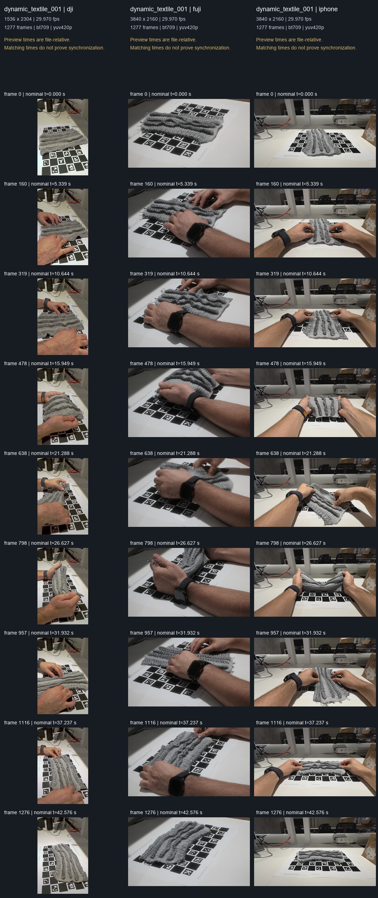

STAGE 01 · failed previous approach · 2026-10-08T15:10:31.911182+00:00
Rejected sparse textile result
The previous textile viewer contains 45 initial tracked points and no RGB Gaussian model. Tracking loses support under folds and hands. The source recordings remain preserved; this revision replaces that failed route.

Diagnostic from real source images or model renders; not a desktop screenshot